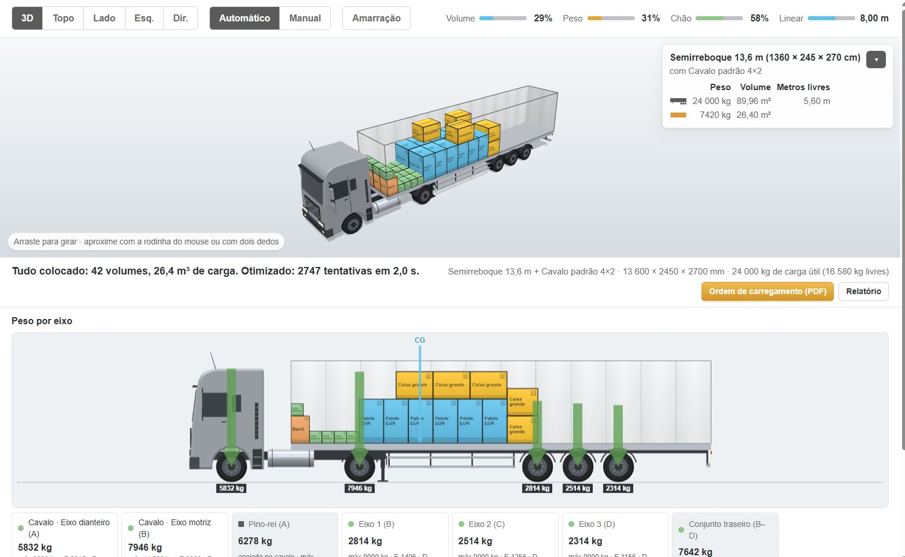
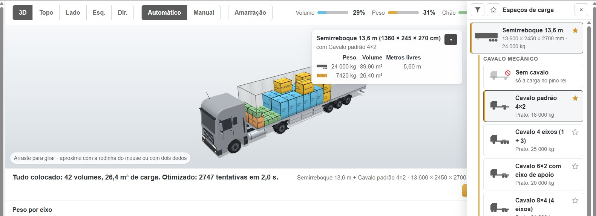
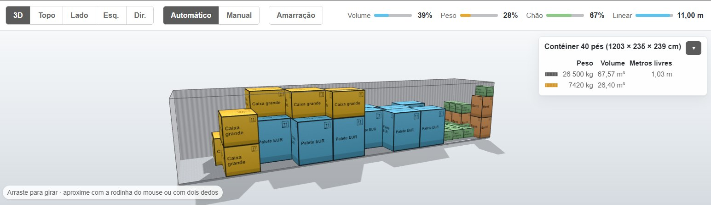
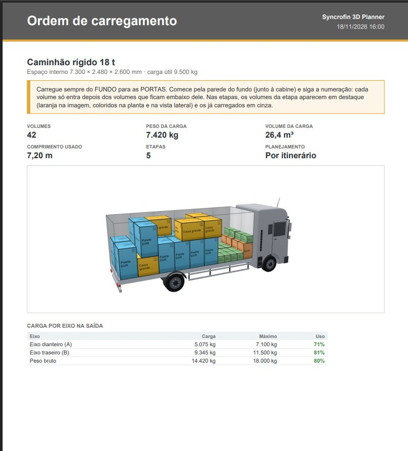
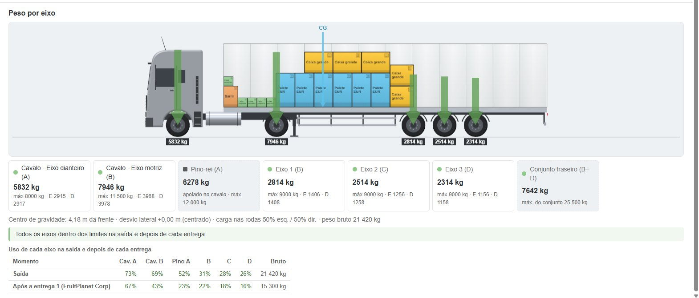
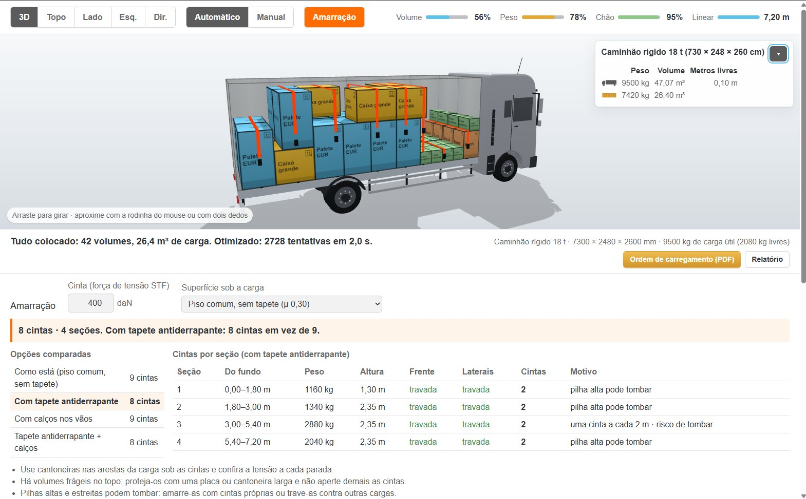
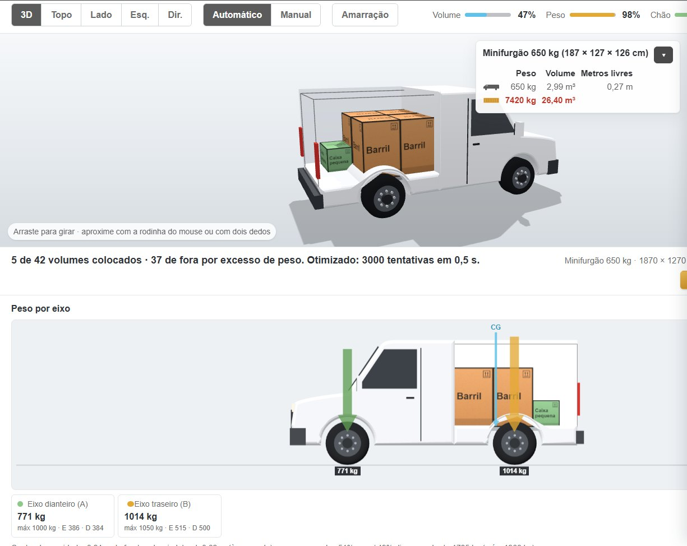
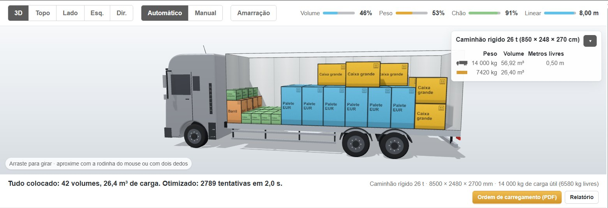

Tempo de doca
Sem o plannerTentativa e erro com o caminhão encostado. Carrega, não fecha, descarrega e começa de novo.
Com o plannerO plano está pronto antes do caminhão chegar, e a equipe recebe a ordem de carregamento numerada, etapa por etapa.
Plano de carga 3D para caminhões, carretas, vans e contêineres
O Syncrofin 3D Planner monta o plano de carga em 3D, confere o peso de cada eixo, calcula a amarração e entrega à doca a ordem de carregamento pronta. E o operador continua no comando: qualquer volume pode ser ajustado à mão.

Quando o plano de carga depende só da experiência de quem está na doca, a conta chega depois: no tempo parado, na balança e no frete.
Sem o plannerTentativa e erro com o caminhão encostado. Carrega, não fecha, descarrega e começa de novo.
Com o plannerO plano está pronto antes do caminhão chegar, e a equipe recebe a ordem de carregamento numerada, etapa por etapa.
Sem o plannerExcesso de peso em um eixo descoberto na balança, volume frágil embaixo de peso e entrega bloqueada por carga de outro cliente.
Com o plannerCada eixo é conferido na saída e depois de cada entrega. Frágil vai por cima, e a ordem das entregas é respeitada.
Sem o plannerCarreta contratada para uma carga que caberia num truck, ou veículo pequeno que obriga a uma segunda viagem.
Com o plannerUm clique em Comparar veículos planeja a carga em toda a frota e recomenda o menor veículo que leva tudo dentro dos limites.
Agilidade na doca, qualidade no transporte e custo sob controle, com o sistema fazendo as contas que hoje ficam na cabeça de quem carrega.
Pare de montar a carga na tentativa e erro. O planner encaixa cada volume, testa milhares de arranjos e entrega o melhor plano enquanto você ainda está conferindo o pedido.



Cada plano é conferido contra os limites do veículo e as regras de cada volume antes de virar ordem de carregamento. O que passa do limite aparece na tela, não na balança.


Veja quanto da capacidade cada veículo vai usar antes de contratar o frete. Sem carreta para carga de truck e sem segunda viagem por falta de espaço.

O recurso Comparar veículos recomenda o rígido 18 t: leva os 42 volumes e aproveita 95% do chão. A carreta de 13,6 m também leva, mas roda com 58% do chão ocupado.
| Veículo | Volume | Peso | Chão | Linear | Resultado |
|---|---|---|---|---|---|
| Caminhão rígido 18 t7.300 × 2.480 × 2.600 mm | 56% | 78% | 95% | 7,20 m | Recomendado |
| Caminhão rígido 26 t8.500 × 2.480 × 2.700 mm | 46% | 53% | 91% | 8,00 m | 42 de 42 |
| Contêiner 40 pés12.030 × 2.350 × 2.390 mm | 39% | 28% | 67% | 11,00 m | 42 de 42 |
| Semirreboque 13,6 m com cavalo 4×213.600 × 2.450 × 2.700 mm | 29% | 31% | 58% | 8,00 m | 42 de 42 |
| Plataforma 13,6 m13.600 × 2.480 × 2.700 mm | 29% | 27% | 57% | 8,00 m | 42 de 42 |
| Minifurgão 650 kg1.870 × 1.270 × 1.260 mm | 47% | 98% | 71% | 1,60 m | 5 de 42 |
Resultado do botão Comparar veículos com a carga de exemplo, no modo por itinerário. Aqui aparecem seis dos veículos comparados; o sistema compara o catálogo inteiro ou só os favoritos.
Quem conhece a carga sabe quando um volume precisa ir para outro lugar. No modo Manual, o operador ajusta o plano à mão e o sistema continua conferindo os limites a cada movimento.

Arraste o volume na vista 3D, com o mouse ou o dedo. Ao soltar, ele encosta na parede ou no vizinho e assenta pela gravidade.
Selecione e use ← → ↑ ↓ para mover 100 mm, com Shift para 10 mm, e R para girar 90°.
Cada movimento atualiza o peso por eixo e o centro de gravidade. Nenhum volume fica sobreposto ou fora do baú.
Peso sobre um frágil, base pouco apoiada ou volume no caminho de uma entrega anterior viram aviso na tela, e a decisão fica com o operador.
As posições ajustadas ficam salvas com o plano. Itens novos ou trocas de veículo encaixam só o que falta, sem mexer no que o operador já posicionou.
Sem instalação: o planner roda no navegador e já vem com 24 veículos e cavalos mecânicos cadastrados.
Importe a planilha do pedido ou digite os volumes, com medidas, peso, quantidade, destino e regras de cada um.
Do catálogo ou da sua frota, com medidas internas, eixos, taras e limites de cada veículo.
Posiciona os volumes, confere eixos e regras e organiza as entregas na ordem do roteiro.
Revise em 3D, ajuste à mão se quiser, calcule a amarração e envie a ordem de carregamento à doca.
Capturas do Syncrofin 3D Planner em funcionamento, com a carga de exemplo. Clique em qualquer tela para ampliar; as setas do teclado percorrem a galeria.
Recursos pensados para a rotina de quem expede, transporta e entrega.
Normal, para o melhor aproveitamento; por cliente, com a carga de cada um em bloco; e por itinerário, na ordem das entregas.
Apoio mínimo, desbalanceamento lateral máximo, carga mínima nos eixos dianteiro e de tração e tempo de otimização.
19 tipos de veículo, com até cinco eixos, taras, cargas máximas, PBT e vista lateral em escala que acompanha a digitação.
Cabine, rodas nos eixos, cavalo com prato e pés de apoio, para a equipe reconhecer na tela o veículo que está na doca.
Documento pronto para imprimir, com etapas, planta, vista lateral e a posição de cada volume a partir do fundo.
Roda no navegador. Planos, frota e favoritos ficam salvos no próprio computador, sem depender de servidor externo.
Escolha o veículo de cada viagem e libere a carga com os eixos conferidos.
Expedição com ordem de carregamento padronizada para todos os turnos.
Cargas fracionadas de vários clientes, separadas por bloco ou por roteiro.
Contêineres de 20 e 40 pés, inclusive High Cube, aproveitados ao máximo.
Na demonstração, cadastramos os veículos da sua frota e planejamos uma carga sua do começo ao fim.